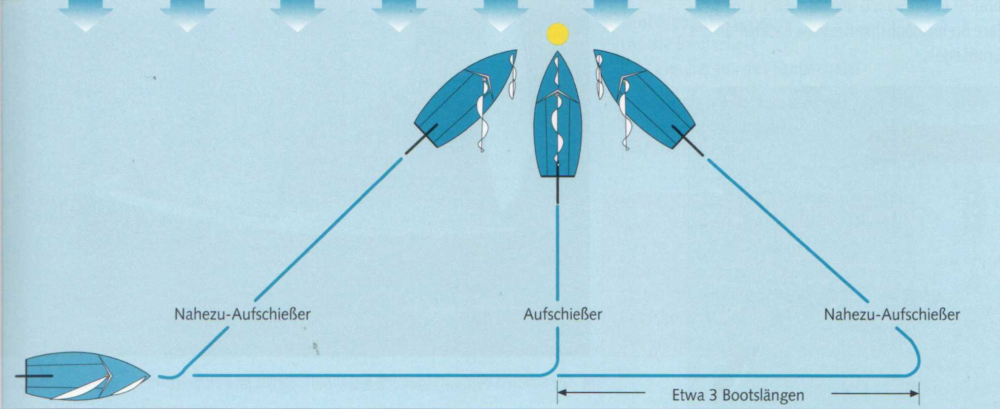

Ein Segelboot kann man nur abstoppen, indem man in den Wind schießt oder aufschießt, das heißt hart anluvt, bis das Boot mit dem Bug im Wind steht.
| Merke |
|---|
| Aufgeschossen wird in den wahren Wind, der achterlicher einfällt als der scheinbare, mit dem man segelt. Man unterschätzt deshalb leicht beim Ruderlegen und Andrehen den Winkelbogen, den der Bug zu durchmessen hat, bis er im wahren Wind liegt. |
Mit einem Aufschießer legt man überall dort an, wo man in Lee genügend Raum hat. Es wird ein gedachter Punkt angesteuert, dort die Fock geborgen, das Boot in den Wind gedreht und mit loser Großschot auslaufen
gelassen. Der Abstand des Drehpunktes von der Anlegestelle muss so bemessen sein, dass das verbleibende Fahrtmoment des Bootes gerade ausreicht, um mit killendem Großsegel an den Steg (Festmachepfahl oder Boje) zu kommen. Das Geschick bei einem Anlegemanöver liegt darin, diese Auslaufstrecke richtig einzuschätzen. Sie ist abhängig von Windstärke, Seegang, Bootsgewicht und Ruderausschlag.
Allgemein gilt:
Er ist ein modifizierter Aufschießer. Der Drehpunkt liegt nicht mehr genau in Lee, sondern etwa drei Bootslängen rechts oder links vom Ziel. Das Boot läuft mit killenden Segeln auf einem Am-Wind-Kurs, entweder über Steuerbord- oder Backbord-Bug aus.
Am wirkungsvollsten ist das Pumpen mit dem Großsegel: Dazu fasst man in die gefierte Großschot und holt das Segel an. Sobald das Boot Fahrt aufnimmt, muss die Schot wieder gelöst werden, sonst treibt das Boot ab. Dieser Vorgang ist beliebig oft wiederholbar.
